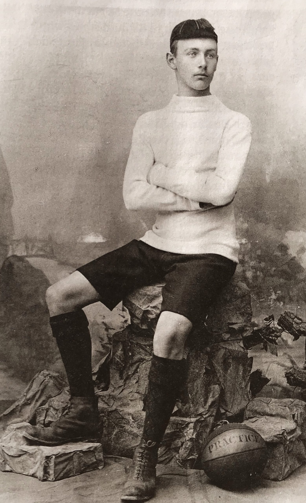
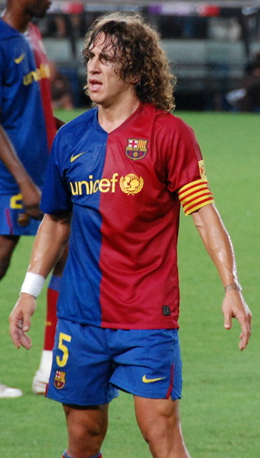
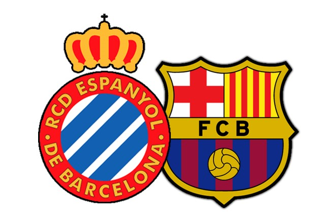
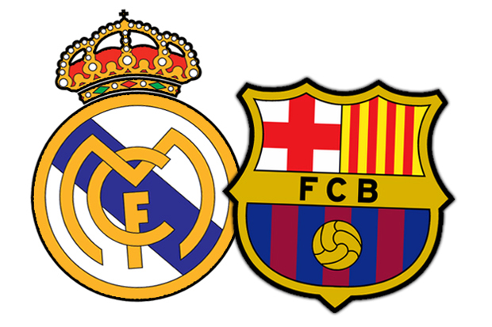
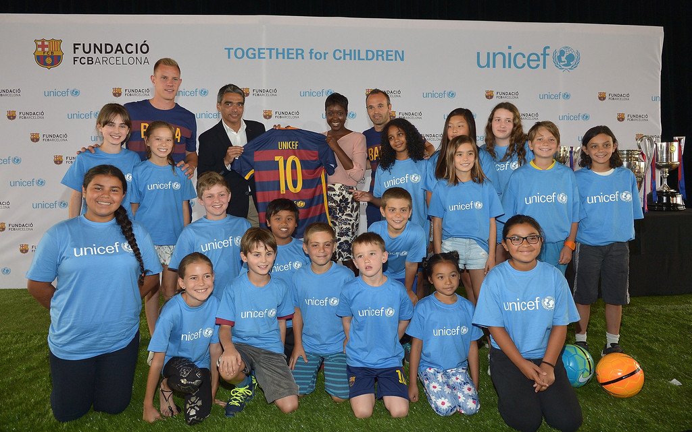

Historia

EL Fútbol Club Barcelona fue fundado el 29 de noviembre de 1899 por un grupo de doce aficionados al fútbol, convocados por el suizo Hans Gamper mediante un anuncio publicado en la revista Los Deportes el 22 de octubre del mismo año. Entre los doce fundadores del club había seis españoles, tres suizos, dos ingleses y un alemán. El nombre original escogido fue «Foot-ball Club Barcelona», en inglés, y se designó al suizo Walter Wild como primer presidente del club por ser la persona de más edad de entre las presentes.
El Barça se ha convertido, para millones de personas de cualquier parte del mundo, en un símbolo de identidad no tan solo deportivo, sino también social, político y cultural. En los momentos más difíciles ha sido la bandera de Catalunya y ha representado los anhelos de libertad del pueblo catalán, una simbología que continúa fuertemente arraigada a la idiosincrasia del club y a la masa social. En el contexto español, el Barça se ve como un club abierto y democrático. Y en el resto del mundo, el Barça se identifica con causas solidarias, concretamente con la infancia, a través de su acuerdo de patrocinio con Unicef.
Durante todo un siglo, el barcelonismo ha vivido momentos de gloria e infortunio, épocas brillantes y otras no tan exitosas, triunfos épicos e importantes derrotas. Y cada uno de estos instantes ha contribuido a definir la personalidad de un club que, por sus peculiares características, es único en el mundo.
Simbología

Escudo
Tras su fundación el club empleó como escudo propio el de la ciudad de Barcelona como una forma de expresar su vinculación con la ciudad. Dicho escudo permaneció en uso hasta el año 1910, dos años después de que Hans Gamper salvara el club de la profunda crisis, en un intento de dotar al club de un escudo propio y diferenciado. La entidad convocó un concurso abierto a todos los socios para que enviaran sus propuestas, resultando ganador el diseño de Carles Comamala, jugador del club entre 1903 y 1912.
El diseño moderno del escudo es obra de una adaptación del diseñador Claret Serrahima realizada en 2002, que incluye unas líneas más estilizadas, suprime los puntos que separaban las iniciales del club, abrevia el nombre y reduce el número de puntas. El escudo ha tenido diez versiones desde la fundación del club.
El escudo del Fútbol Club Barcelona tiene forma de olla, dividida en tres cuarteles. En los dos superiores se reproduce la bandera de Barcelona, esto es, la Cruz de San Jorge y la bandera de Cataluña. En el cuartel inferior aparece un balón sobre los colores azul y grana del club. En el centro del escudo, en una franja, aparecen las iniciales del club, «F. C. B.».
INDUMENTARIA

Los colores distintivos del F. C. Barcelona son el azul y el grana, de donde procede el sobrenombre de "azulgrana" (blaugrana en catalán) con el que se conoce a los jugadores y aficionados del club. Estos colores siempre han estado presentes en la camiseta titular del equipo. Sin embargo, durante los diez primeros años de historia del club los pantalones fueron de color blanco, más tarde negros, y desde la década de 1920, azules.
El primer equipo de fútbol del F. C. Barcelona era uno de los pocos equipos que no llevaban publicidad en el espacio central de la camiseta, con la excepción de dos partidos amistosos disputados en Japón en 1990 en los cuales el equipo azulgrana mostró el logo de Japan Airlines por imposición de los organizadores. Quitando esta excepción, en el año 2006 el club alcanzó un acuerdo con Unicef, donde el club dona un millón y medio de euros anuales a proyectos promovidos y organizados por Unicef. Sí recibe cuantiosos ingresos por lucir los logotipos de Nike en la camiseta y pantalón, y el logotipo de TV3 en una de las mangas de la camiseta.
El F. C. Barcelona fue el primer equipo de España, que incluyó una bandera territorial en la camiseta, en este caso la Bandera de Cataluña, durante el mandato presidencial de Joan Laporta en la temporada 2005/06 como una muestra de catalanidad. Desde la temporada 2005/06 hasta la actualidad el F. C. Barcelona, sigue llevando la bandera de Cataluña, en este caso en el brazalete de capitán, siempre que el régimen político de España lo ha permitido.
INFRAESTRUCTURA

Estadio
El estadio del F. C. Barcelona es el Camp Nou, propiedad del propio club. Inaugurado en 1957,tiene una capacidad de 99.354 espectadores, todos sentados. Es uno de los cuatro estadios de España catalogado como «Estadio Cinco Estrellas» por la UEFA, lo que lo habilita para acoger finales de la Liga de Campeones, Supercopa de Europa y Copa de la UEFA, como ha sucedido en 15 ocasiones. Se encuentra en el barrio de Las Corts de Barcelona, junto a otras instalaciones del club, como el Mini Estadi (estadio del Barcelona B) y el Palau Blaugrana, cancha del equipo de baloncesto. En las instalaciones del Camp Nou se encuentra el Museo del F. C. Barcelona, el museo más visitado de Cataluña.
Al principio de su fundación, el 29 de noviembre de 1899, el F. C. Barcelona, no disponía de estadio propio, por lo que tenia que jugar sus partidos de local en terrenos de juego ajenos, desde el primer partido inaugural como club el 8 de diciembre de 1899 hasta que el 14 de marzo de 1909 disputa su primer partido como local en campo propio, en el Campo de la calle Industria. Se pueden contar seis estadios diferentes antes de tener estadio propio. Su primer estadio fue el ex Velódromo de la Bonanova en el año 1899, el segundo estadio fue el Campo del Hotel Casanovas en el año 1900, el tercer estadio fue La Plaza de las Armas en el año 1901, el cuarto estadio fue el de La Carretera de Horta entre los años 1901 y 1905, el quinto estadio fue el de La Calle Muntaner entre los años 1905 y 1909 y el sexto estadio fue el Campo de la Fuxarda, donde se jugaron en el año 1909 solo dos partidos antes de pasar al estadio propio del Campo de la calle Industria. Entre 1909 y 1922 jugaba en el Camp del Carrer Indústria de Barcelona, vulgarmente llamado La Escopidora, con una capacidad de 6000 espectadores. Una de las versiones acerca de la etimología de la palabra "culés" procede del estadio del campo de la calle Industria, pues las gradas permitían ver desde fuera del recinto las posaderas de los aficionados. Entre 1922 y 1957 disputó sus partidos en el Campo de Las Corts, inaugurado para acoger a 30 000 espectadores, y que llegó a tener una capacidad de 60 000 personas. El Campo de Las Corts, fue el campo donde el F. C. Barcelona el 24 de septiembre de 1926, empezó a jugar como local en campo de hierba, cuando lo había hecho hasta la fecha en campo de tierra.
La remodelación se basa en poner al día un estadio que cuenta con más de 50 años y crear una cubierta para proteger a los espectadores de las inclemencias meteorológicas. Los requisitos fundamentales eran: ocasionar las mínimas molestias a los socios, que la remodelación fuera compatible con la competición deportiva y que se ciñera a un presupuesto determinado. Así como la creación de un diseño atractivo, moderno y funcional.
En el último día de campaña electoral, el 11 de junio de 2010, dos días antes de ser elegido Sandro Rosell como presidente del F. C. Barcelona, dos miembros de su equipo, Jordi Moix y Jordi Cardoner, presentaron el proyecto Espai Barça, en castellano, Espacio Barça, dentro del cual entre otras obras queda englobado el nuevo modelo de reforma del Camp Nou, donde se informa una valoración de coste global de 150 millones de euros. El Camp Nou se remodelará interiormente, mejorando la accesibilidad, cubriendo las graderías y ampliándolo con más asientos. Las obras en caso de que se aprobase el proyecto, se prolongarían entre seis y ocho años.
RIVALIDADES

RCD Espanyol
El F. C. Barcelona mantiene una fuerte rivalidad futbolística con el Real Club Deportivo Espanyol, equipo de la ciudad de Barcelona. El derbi barcelonés es el nombre que describe los partidos entre ambos clubes, los más representativos de la ciudad. Se han enfrentado en 195 ocasiones, contando dos partidos europeos disputados en la Copa de Ferias, con un balance de 122 partidos ganados por el Barcelona, frente a 44 del Español. Xavi Hernández es el futbolista con más partidos disputados, con un total de 32, mientras que el argentino Lionel Messi es el máximo anotador, con 21 goles. La rivalidad nació en parte por los continuos enfrentamientos de antaño que, entre otras cosas, eran aguerridos y contaban con buenos jugadores. Otro de los hechos es porque fueron pioneros del fútbol en Barcelona, los más representativos, a esto también hay que agregar que históricamente se consolidaron como los dos mejores equipos en las competiciones organizadas por la Federación Catalana de Fútbol.

Real Madrid CF
El equipo culé también disputa el denominado clásico del fútbol español frente al Real Madrid Club de Fútbol, unos de los partidos más importantes y trascendentes del mundo. La audiencia supera los 500 millones de espectadores y se acreditan más de 750 periodistas; a menudo, es conocido por la prensa especializada como el Partido del siglo. En el balance general los barcelonistas han ganado 95 partidos frente a los 97 de los madrileños, de un total de 244 encuentros oficiales. El primer duelo oficial se dio en la eliminatoria de la Copa del Rey de 1916, con un resultado favorable para los barcelonistas por 2-1, mientras que el partido de vuelta fue favorable a los madrileños por 4-1. La popularidad e importancia también radica en la cantidad de trofeos ganados y la calidad de jugadores de ambos clubes.
FUNDACIÓN

La Fundación Fútbol Club Barcelona es la entidad social, humanitaria, cultural y deportiva creada en 1994 con el objetivo de promover y brindar apoyo a todas aquellas entidades de carácter humanitario. También se enfoca en comunidades infantiles y adultas que se consideran vulnerables.
Inicialmente las actividades y obras realizadas por la fundación se materializaban mediante las donaciones por parte de socios, simpatizantes y entidades empresariales del país que eran integradas por miembros de honor, colaboradores y miembros protectores. En 2006 la Fundación tomó un nuevo impulso al recibir desde ese año, un 0,7 % de los beneficios ordinarios del club (2,2 millones de euros en 2008). Asimismo, se adhirió al plan de Objetivos de Desarrollo del Milenio de las Naciones Unidas e incorporó por primera vez publicidad de la UNICEF en la camiseta del equipo de fútbol.
Como parte de su gestión social, la fundación ha colaborado con otras entidades gubernamentales y sociales para fomentar la educación infantil, el deporte, la cultura y la salud. Entre sus principales aliados se encuentra la UNICEF, UNESCO, el Alto Comisionado de las Naciones Unidas para los Refugiados (ACNUR), el Consejo Económico y Social de las Naciones Unidas (ECOSOC), entre otros.